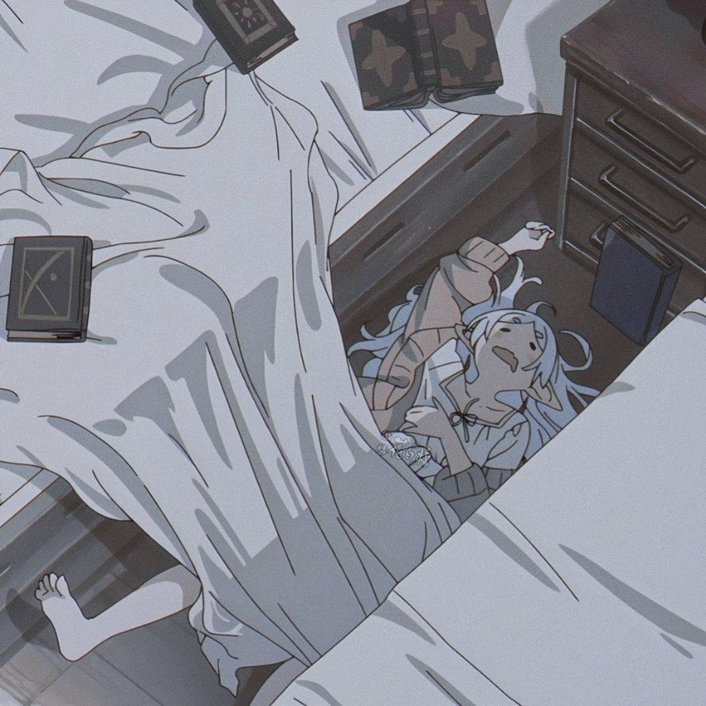

hello, i'm lia! ✧
i love studying and writing, but i also really enjoy the creative side of life. i'm into photography, film production, dancing, arts and crafts, journaling, reading books, baking, cooking, and watching movies and anime.
i've been interested in photography since elementary school. i didn't have a proper camera before, so i only recently started practicing more seriously now that i finally have one of my own. i'm still learning, but honestly, that's part of the fun.
my credentials & achievements ✿
if u wanna see how i lead, my achievements, and random stuff about me, check this link:
education
- st. gabriel academy — humss strand graduate
- currently a second-year bma student
leadership experience
- class president, s.y. 2016–2017
- class vice president, s.y. 2020–2021
- class secretary, s.y. 2021–2022
- class secretary, s.y. 2022–2023
- ran for student council in 2017
- liaison officer for the student board coordinating council central board secondary, s.y. 2024–2025
- media officer for sbcc cbs
academic excellence
with honors — jhs with honors — shs sbcc active leader awardee deportment awardee, 2023–2025 talentadong gabrielan awardeeextracurricular activities
- gecs performing arts member, s.y. 2016–2017
- ambassadress for english month, s.y. 2019–2020
- member of the batang emergency response team
- cic secretary, s.y. 2021–2022, for the campus integrity crusaders at potrero national high school
- reading tutor volunteer at potrero elementary school 1, s.y. 2021–2022
- the herald club member, s.y. 2023–2024
- performing arts member, s.y. 2023–2024
- sinilikhayaw theatre dance group member, s.y. 2023–2025
- kadsa hiphop — 3rd placer
- best film editor for the gabrielan film festival
photojournalism & writing
- photojournalism representative for potrero elementary school 1, 2018
- photojournalism representative for potrero national high school, 2022
- best news anchor during the english month radio broadcasting competition
creative highlights
i enjoy combining writing, performance, photography, editing, and storytelling. a lot of my school experiences helped me become more confident in creating and working with other people.
things i love doing ♡
creative little hobbies
- reading books
- writing
- journaling
- making junk journals
- arts and crafts
- photography
- dancing
homebody activities
- baking
- cooking
- watching movies
- watching anime
- watching ghost videos
- sleeping, most importantly
my anime corner ✿
i also watch anime whenever i have the time. my favorite is naruto, and i recently got really into frieren too. frieren is honestly so calm and pretty, and i love the quiet feeling of the show.

frieren taking a nap ☾
this is basically me after doing one productive thing for the entire day.

sleepy frieren again ✧
sleepy anime characters are adorable, especially when they look completely unbothered.
games i've been playing lately ☾
my game choices are kind of all over the place. most of the time i want something scary, chaotic, or just fun enough to make me forget the time.
horror & chaos
- outlast — the first one because i like suffering
- left 4 dead
- r.e.p.o.
- roblox horror games
other games
- game of thrones: kingsroad
- valorant — playing since 2022
- overwatch
- apex — downloaded recently, still need to try it lol
my movie and series corner 🎞
i watch a lot of movies and series, especially horror. i don't
really know how to explain my taste except that i love anything
creepy, disturbing, supernatural, or unexpectedly violent. i
especially like gore-heavy movies, but i also love a good slow
burn when it gets under my skin.
currently watching house of the dragon. im done with game of thrones too!!
the haunting of hill house, the haunting of bly manor, sabrina, anne with an e, lucifer, in a violent nature, insidious, paranormal activity, midsommar, hereditary, get out, and the entire conjuring universe, including the nun and annabelle.
i also love watching ghost and paranormal videos on youtube, especially sam and colby. there is something so entertaining about watching people explore places i would absolutely never enter myself.
watch sam & colby on youtube ✧my letterboxd is still incomplete because i keep forgetting to log what i watch, but you can still follow me anyway hahaha.
visit my letterboxd ✿my creative side ♡
i'm not a professional yet and i'm still learning, but i really enjoy trying new things and building my skills little by little. i'm interested in photography, editing, film production, directing, writing, and visual storytelling.
if u wanna see some of the things i've made and the projects i've worked on, u can check this folder:
view my creative samples ♡helped with the creative direction and production of a school station id.
watch the station id ✧helped with camera work, behind-the-scenes footage, and editing for a senior high school short film.
watch the short film ✿